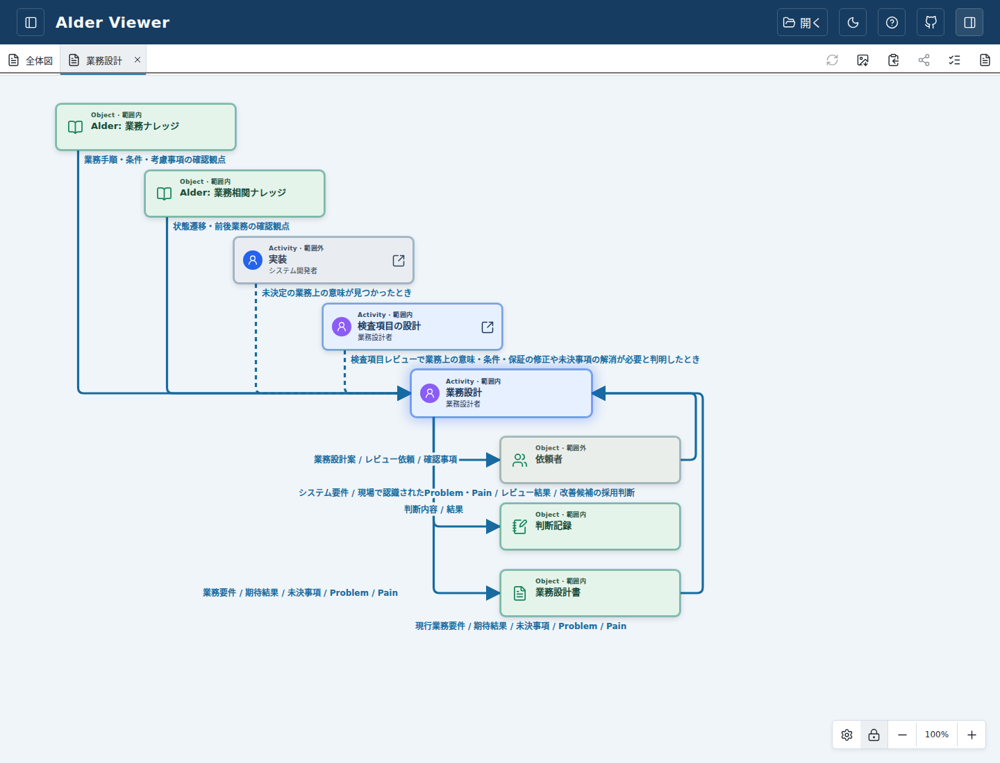
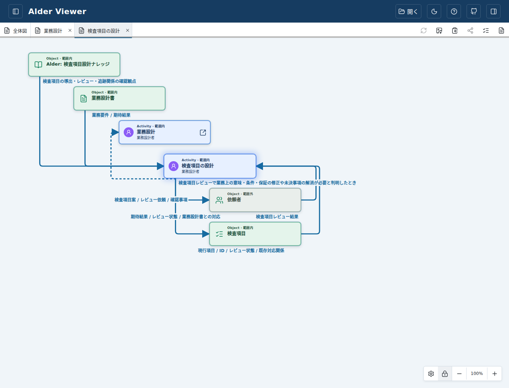
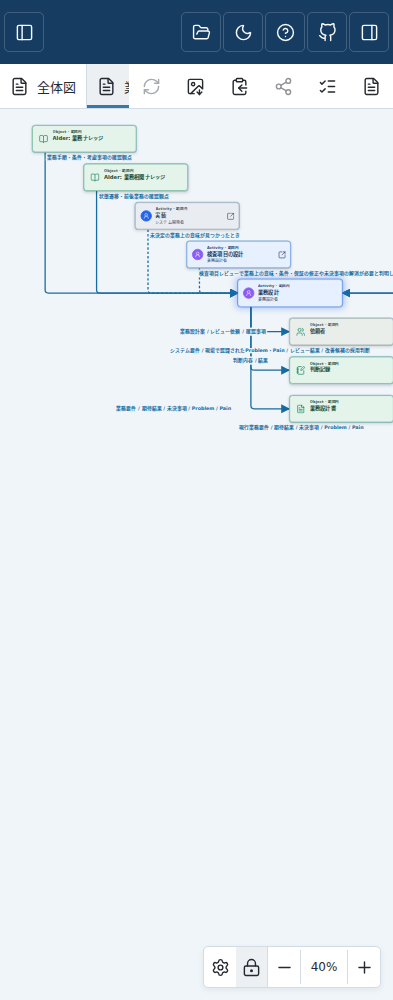
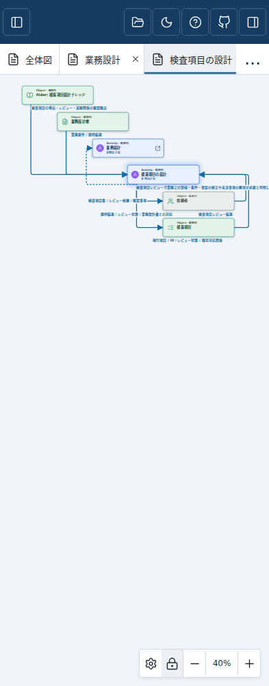

確認用・未採用。対象commit 170a65d05d7132874ebfce129658845a987709a2。
操作可能なPreviewで標準サンプルを開く ／ Draft PR #245 ／ このcommitの全体CI
標準サンプルから「業務設計」「検査項目の設計」の詳細を開いてください。保存済み表示は「表示設定 → レイアウトを初期値に戻す」で新しい階段状配置になります。手動配置を残す場合は再配置せず閲覧できます。
上流Objectと例外Activityが右下へ階段状に並び、通常・Activity間例外はアイコン下付近から出発し、Output先Objectから戻るInputは右側面から上へ回ってActivity右側へ入ります。Input captionは入力元側です。

上流の階段配置と共通始点に加え、業務設計へ戻る例外の方向・破線を維持しています。

40%表示。図は横スクロールできます。全12枚（両詳細×1280/393/320px×light/dark）の回帰画像はCIのwiring-review artifactにも保存します。


長いcaptionとすべての線の交差をなくす保証はありません。本人GUI再レビュー・採否までマージ・リリース・本番反映は行いません。